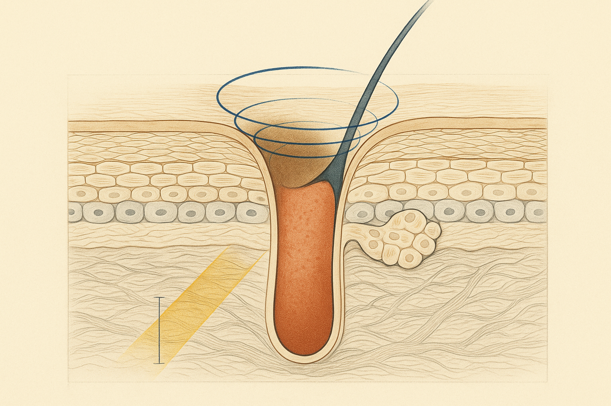
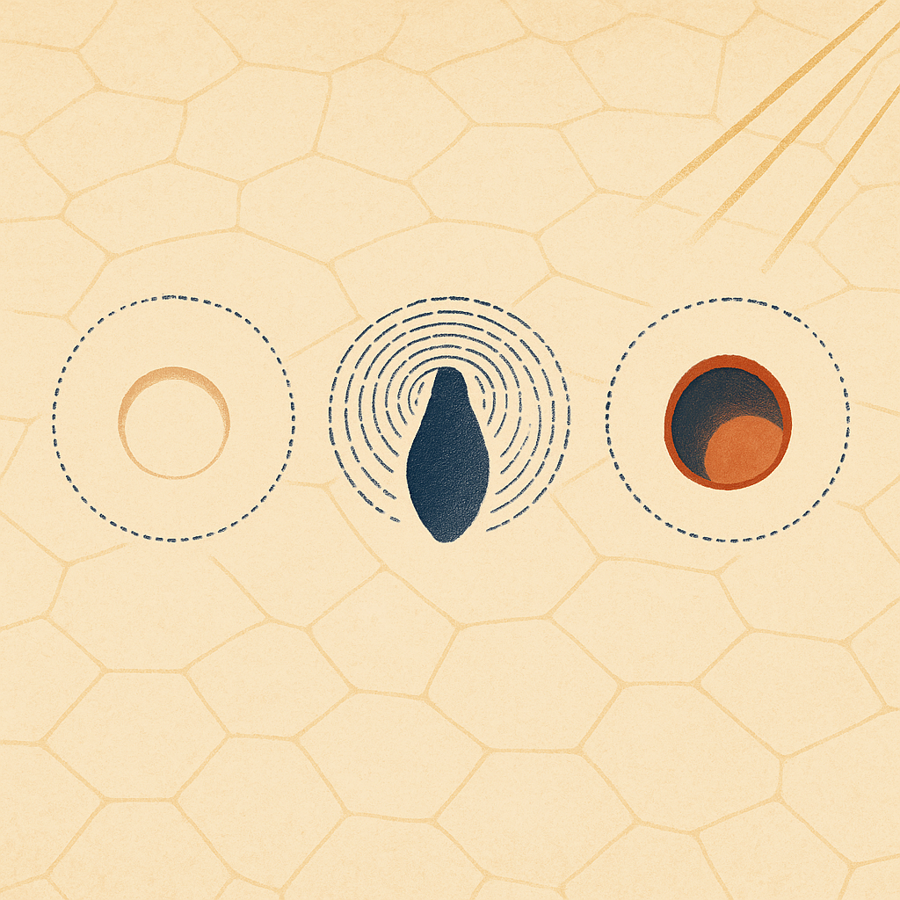
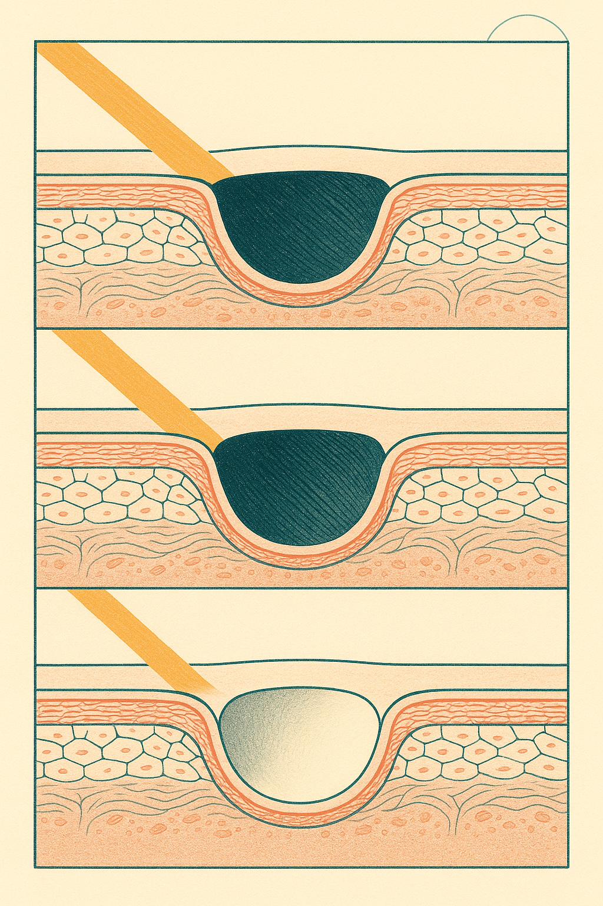

Review below. Reply approve to publish the Facebook post, or tell me edits.

Nothing you can buy will permanently change the true diameter of a pore. And yet pore appearance genuinely does change, week to week, sometimes hour to hour.
That gap, between a fixed structure and a shifting appearance, is the whole story. Understanding it is the difference between spending money on the right thing and spending it on the wrong one.
A pore is not a hole. It is a well. You see the shadow.
Most of us picture it wrong. The mental image is a sheet of skin with tiny holes punched through it, like a colander. The reality is closer to a well.
Each visible facial pore is the opening of a hair follicle and its attached oil gland: a funnel-shaped shaft (the follicular infundibulum) descending from the surface down into the dermis. It has depth. It has walls. It has contents.
Which means that when you lean into the mirror and see a "pore", you are almost never seeing the opening itself. You are looking down a well. What you actually see is the shadow inside the shaft, tinted by whatever happens to be sitting in it.
Once you hold that image, "pore size" as you experience it splits into three separate variables. They change on completely different timescales, and confusing them is exactly why people buy the wrong fix.
The shaft is not empty. It carries sebum, the skin's natural oil, along with shed cells on their way out. A shaft carrying more sebum sits held open by its own contents, and researchers have measured this directly: a 2006 study in the British Journal of Dermatology found that sebum output correlates with measured facial pore size (Roh et al., 2006).
There is a second effect stacked on top. The material sitting at the surface of the shaft oxidises on contact with air and darkens, which adds contrast against the surrounding skin. A darker dot against a lighter background reads as a bigger dot, even when the opening has not changed at all.
The practical read: contents are the only variable a cleanser, a clay mask or an oil-control routine is really working on. Those products can visibly reduce how prominent pores look over days to weeks, because they change what is in the well and how dark its surface appears. They do not change the well.
Around the mouth of each shaft sits a ring of collagen and elastic fibres, a structural collar that holds the opening round and taut. This collar is part of the same dermal scaffold that supports the rest of your skin.
As that scaffold gradually slackens with age, the collar loses tension. The opening stops being held in a neat circle and begins to elongate and drift with the pull of the surrounding skin. This is why midlife pore complaints tend to read differently from the pores of your twenties: less like dots on the nose, more like small commas or teardrops on the cheeks. A 2016 review in Dermatologic Surgery names reduced elasticity around the pore as one of the principal causes of enlarged-looking facial pores, alongside sebum output (Lee et al., 2016).
This variable moves slowly in both directions. It slackens over years, and anything aimed at supporting it works over months, not days.
Here is the one almost no one factors in. If a pore is a well, then how deep and dark it appears depends on the angle of the light falling into it.
Overhead bathroom downlights are close to the worst case. They rake across the cheek at a steep angle, so every shaft casts a hard little shadow crescent inside its own well. Soft light from a window in front of you does the opposite: it fills the well, the shadow collapses, and the same pores nearly disappear.
Nothing about the skin changed between those two mirrors. Same face, same pores, same day. Different light.
Before you diagnose your pores, run this. It takes five minutes.
Photograph the same patch of cheek twice, same phone, same distance, no zoom. First shot: standing under an overhead light. Second shot: facing a window in daylight. Then compare.
If the pores all but vanish in the second photo, what you are unhappy with is mostly a lighting problem, not a skin problem, and your bathroom downlight has been lying to you every morning. If they persist clearly in both photos, you are looking at contents or collar, and it is worth thinking about which one based on where they are (nose and inner cheek dots lean contents; outer cheek teardrops lean collar).
Blurring primers and film-forming "pore minimisers" do something genuine: they scatter incoming light and partly fill the well, which visibly reduces the shadow. That is real. It is also purely optical, entirely cosmetic, and it washes off at the end of the day.
There is nothing wrong with pulling that lever. Just know it is the shadow lever, not the contents lever and certainly not the collar lever.
Put the three variables in order of speed and you get a useful rule for judging any pore product:
No. On the evidence available, an at-home light therapy mask does not change pore diameter, and nothing about the three variables above suggests it could. It sits in the slow column with the other dermal-scaffold habits: a general, gradual input, judged over weeks, aimed at the scaffold as a whole rather than at any individual pore. It is a cosmetic device, not medicine. If a listing tells you otherwise, it is describing the shadow lever or the contents lever and quietly borrowing the language of the slow one.
One more thing worth knowing: baseline pore prominence varies substantially from person to person and across ethnic groups from the outset, something that has been formally measured in a large multiethnic study (Flament et al., 2015). Visible pores are a normal structural feature of skin, not a hygiene failure and not a moral one.
So the next time something promises a permanent reduction in pore size, translate it. It is almost certainly working on shadow or contents, the fast levers, and describing the result as if it were the slow one. Now you can tell the difference.
If you ever want a closer look at the mask and the full spec, it is here: the Redermis light therapy mask, full spec
And before you change anything, run the two-light test. Take the two photos this week, put them side by side, and let them tell you which of the three variables you are actually dealing with.

Try this today. Photograph the same patch of cheek twice, five minutes apart: one shot under the bathroom downlight, one facing a window. Same phone, same distance, no zoom. Then put them side by side.
Most people are startled by the difference. Here is why.
You have never really seen your pores. You have seen the shadows they cast.
A pore is the opening of a tiny shaft, not a dot painted on flat skin. What your eye registers is the shadow sitting inside that little well, plus whatever is filling it. Overhead downlights rake across the cheek at close to the worst possible angle. Window light fills the well and the shadow collapses.
If they nearly vanish in the window shot, that was a lighting problem, not a skin problem. Tell me which one lied to you, window or downlight.
So three completely different things get lumped together as "big pores". How much sebum the shaft is carrying, which changes over weeks. How much tension the collagen and elastin collar around the opening still holds, which changes over months. That collar is why midlife pores read as small commas on the cheeks rather than dots on the nose. And the angle of the light hitting your face, which changes instantly.
The honest hierarchy: shadow changes today, contents change in weeks, the collar changes over months. The scaffold habits (sun protection, topical actives, and for some people daily light, ten minutes a day) all live in that months column, judged at 4 to 8 weeks rather than overnight.
An at-home light therapy mask belongs in that months column too: slow, general, patient, a cosmetic device rather than medicine. Ours is linked in the first comment if you ever want a closer look at the spec.
#SkinScience #PoreMyths #SkincareEducation
FIRST COMMENT: https://redermis.com.au/products/red-light-therapy-face-neck-mask

Same pores. Two mirrors. Two different faces.
Here is why: a pore is a well, not a dot. What you actually see is the shadow inside it.
"Pore size" is really three separate variables, wrongly treated as one.
Contents. Sebum sitting in the shaft holds it open and darkens at the surface. Changes over weeks.
Tension. The collagen and elastin collar around the opening slackens with time, so the circle stretches toward a teardrop. Changes over months.
Shadow. The angle of the light decides how deep the well reads. Changes instantly.
Overhead downlights rake across your cheek at close to the worst possible angle. Window light fills the well.
The test: two photos of the same cheek, five minutes apart. One under a downlight, one facing a window. Same distance, no zoom. Compare. If they vanish under the window, the problem was the downlight.
The collar is the slow column. Sun protection, topical actives, daily light. Judged at 4 to 8 weeks, not overnight.
Save this for the next time you are under bad bathroom light.
We wrote the long version with the dermatology papers cited, if you want to check the science yourself. Full spec and the article are in the bio.
#skinscience #poresize #skincareeducation #skincareaustralia #aussieskincare #skinbarrier #collagensupport #skincareroutineau #skincaremyths #skintexture #redlighttherapyathome #lightandskin
## Title
Pore size is mostly an illusion: here is what actually changes
## Description
A pore is a tiny well, not a dot. You see the shadow inside it, so "how to minimise pores" is three questions on three timescales. Contents shift over weeks. The collar slackens over years. Blurring primers act only on the shadow. None changes true diameter.
Run the two-light test: photograph the same cheek twice, five minutes apart, downlight then window. If the pores vanish, it was the light.
Save this. The full article cites the studies.
#SkincareScience #PoreCare #SkinHealth
Note: this pin reuses the Instagram image.